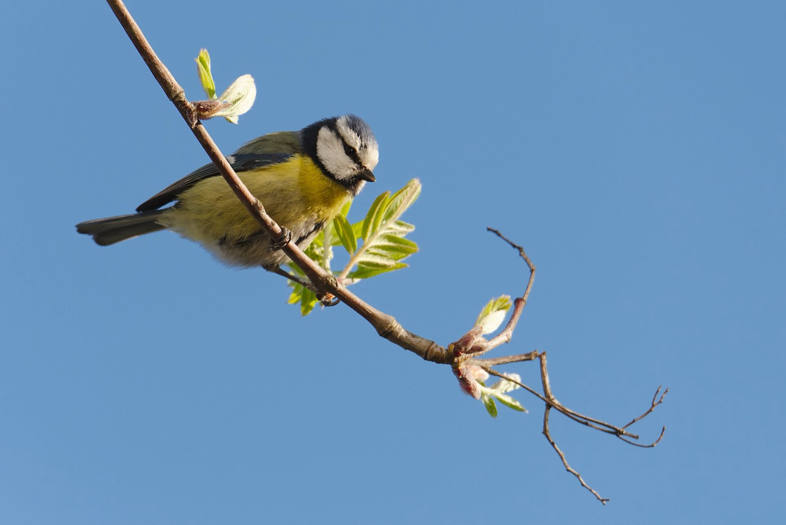
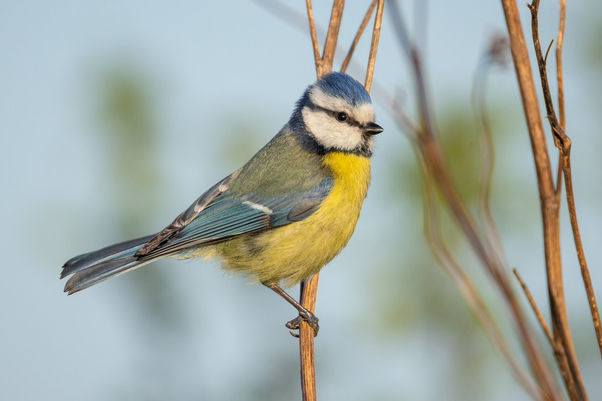
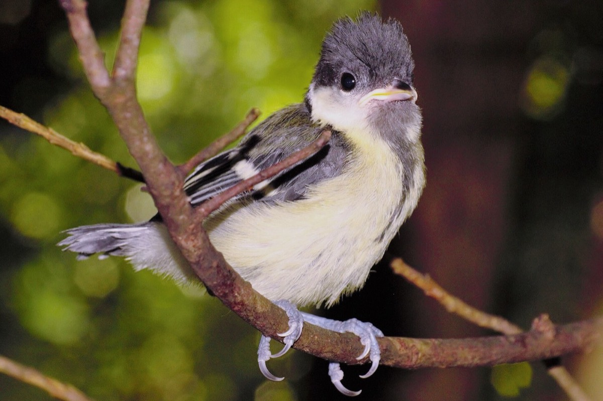
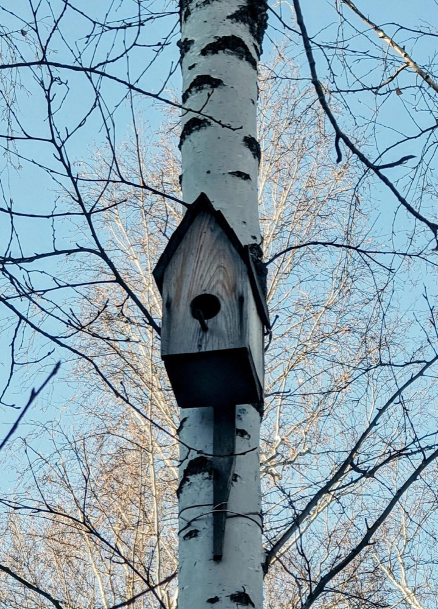

Pourquoi installer un nichoir
Un nichoir, c'est une petite maison en bois qu'on installe dehors pour que les oiseaux viennent y faire leur nid.
Moi, je veux en poser un pour deux raisons.
La première, c'est pour pouvoir les regarder. Quand un nichoir est habité, les parents font des dizaines d'allers-retours dans la journée pour nourrir leurs petits. On peut les observer depuis une fenêtre, sans les déranger.
La deuxième, c'est pour les aider à se reproduire. C'est vraiment à ça que sert un nichoir : ce n'est pas un abri pour dormir, c'est l'endroit où la femelle pond ses œufs et où les oisillons grandissent jusqu'à savoir voler.

Les types de nichoirs
Il n'existe pas un nichoir, mais plusieurs familles de nichoirs. Chaque oiseau a ses habitudes, et un modèle qui convient très bien à l'un ne sera jamais visité par l'autre.
Le nichoir fermé, dit « boîte à lettres »
Une boîte en bois avec un trou rond sur le devant. C'est le plus répandu, et c'est celui que j'ai choisi. Il convient aux mésanges, aux moineaux et aux sittelles. Tout se joue sur le diamètre du trou.
Le nichoir semi-ouvert
Au lieu d'un petit trou rond, il a une large ouverture sur toute la partie haute du devant. Certains oiseaux refusent les cavités étroites et sombres : le rougequeue noir ou le rougegorge ne viendront que dans ce modèle-là. Il se pose plutôt contre un mur, à l'abri sous un débord de toit, et bien caché par de la végétation.
Les grands nichoirs
Beaucoup plus volumineux, et posés bien plus haut — parfois à plus de 5 mètres. Ce sont ceux de la chouette hulotte, de la chouette chevêche ou de la huppe fasciée. Ce n'est plus du bricolage de jardin.
Les nichoirs spéciaux
Les hirondelles et les martinets ne nichent pas dans des boîtes : il leur faut des modèles plats, fixés très haut sous l'avant-toit d'une maison, qui ressemblent à leurs nids de boue naturels.
Une dernière chose, et c'est la LPO qui le dit : un nichoir reste un remplacement. Le mieux, pour les oiseaux, c'est encore de garder les vieux arbres avec leurs trous naturels. Un nichoir aide, mais il ne remplacera jamais un vieil arbre.
Types de nichoirs d'après la LPO Auvergne-Rhône-Alpes.
Les dimensions et le trou d'envol
Le diamètre du trou est ce qui décide quelle espèce peut entrer, et laquelle reste dehors. Quelques millimètres suffisent à tout changer :
- 28 mm Mésange bleue mon nichoir
- 32 mm Mésange charbonnière
- 34 mm Moineau domestique
- 45 mm Étourneau sansonnet
Le plus étonnant, c'est que le petit trou est une protection. Avec 28 mm, la mésange charbonnière est trop grosse pour entrer : elle ne peut pas venir prendre sa place à la mésange bleue. Un trou trop large laisserait entrer n'importe quel oiseau, et les plus petits se feraient chasser.

Les mesures de mon nichoir
J'ai choisi la mésange bleue. Pour elle, il faut une boîte d'environ 13 cm sur 13 cm au sol et 23 cm de haut. Le trou se perce à 17 cm au-dessus du fond : c'est important, car si le trou est trop bas, un prédateur peut passer sa patte à l'intérieur et attraper les oisillons.
Chiffres vérifiés sur le site de la LPO, la Ligue pour la Protection des Oiseaux.
Où l'installer
Le mien ira sur le cerisier du jardin. Un arbre fruitier est un bon choix : il attire beaucoup d'insectes, et c'est justement ce que les mésanges cherchent pour nourrir leurs petits.
Ensuite, il y a trois choses à respecter.
La hauteur
Entre 2 et 3 mètres du sol. Assez haut pour qu'un chat ne puisse pas atteindre le trou en grimpant, mais assez bas pour qu'on arrive encore à le décrocher avec une échelle le jour du nettoyage.
La direction
Le trou doit regarder vers l'est ou le sud-est. C'est de ce côté que la pluie et le vent arrivent le moins. Il ne faut pas non plus le mettre en plein soleil toute la journée : à l'intérieur, il ferait bien trop chaud pour les oisillons.
L'inclinaison
Il faut le pencher très légèrement vers l'avant. Comme ça, quand il pleut, l'eau glisse le long de la façade au lieu de couler par le trou.
Et surtout : un endroit calme, à l'écart du passage. Un nichoir posé au-dessus d'une porte ou d'un banc ne sera jamais occupé.
Hauteur et orientation vérifiées auprès de la LPO.
Quand l'installer
Moi, je le pose maintenant, fin juillet. Mais il faut savoir une chose : aucun oiseau ne viendra y nicher cette année. La saison des nids est terminée. Les mésanges pondent au printemps, et en juillet les petits ont déjà quitté le nid depuis longtemps.
Alors pourquoi le poser si tôt ?
Parce que les oiseaux ont besoin de temps pour repérer un nichoir. Ils viennent l'inspecter, ils s'habituent à le voir, et au printemps suivant ils s'en souviennent. Un nichoir posé longtemps à l'avance a bien plus de chances d'être occupé qu'un nichoir accroché à la dernière minute au mois de mars.
La LPO conseille de les installer en automne, à partir de novembre. Fin juillet, c'est un peu en avance, mais ça ne gêne pas : il sera simplement en place encore plus tôt.
Il faut être patient
Entre le jour où j'accroche mon nichoir et le jour où une mésange y fera son nid, il peut se passer huit mois. Et il arrive qu'un nichoir reste vide une année entière avant d'être adopté. Ce n'est pas grave, et ça ne veut pas dire qu'on s'y est mal pris.

En attendant, il servira peut-être quand même. En hiver, certains oiseaux comme le troglodyte mignon se glissent dans les nichoirs vides pour passer la nuit à l'abri du froid. Le nichoir est fait pour la reproduction, mais il peut aussi dépanner comme dortoir.
D'après la LPO.
Bien le choisir en magasin
Je ne vais pas fabriquer le mien, je vais l'acheter. Mais tous les nichoirs vendus ne se valent pas : certains sont même de mauvais choix pour les oiseaux. Voilà les cinq points que je vérifie avant de passer en caisse.
Le trou : 28 mm
C'est le point le plus important, puisque c'est lui qui décide quelle espèce viendra. Pour ma mésange bleue, il me faut 28 mm.
Du bois brut, et épais
Du vrai bois non traité, avec des planches de 1,5 à 2 cm d'épaisseur. C'est cette épaisseur qui protège l'intérieur du chaud et du froid. J'évite l'aggloméré et le contreplaqué : ils gonflent et se décollent sous la pluie.
Pas de perchoir
Beaucoup de nichoirs vendus ont un petit bâton sous le trou. Ça fait joli, mais les mésanges ne s'en servent jamais — elles se posent directement sur le bord du trou. En revanche, ce bâton offre une prise parfaite à un chat ou à une pie pour venir fouiller à l'intérieur. Un nichoir avec perchoir, je le repose sur l'étagère.
Il doit pouvoir s'ouvrir
Le toit ou une paroi doit s'ouvrir, en général grâce à une charnière. Sans ça, impossible de le nettoyer une fois par an. Un nichoir qu'on ne peut pas ouvrir est un nichoir qui ne servira qu'une seule saison.
Des petits trous dans le fond
Il faut quelques trous d'environ 5 mm dans le plancher. Ils laissent l'air circuler et l'eau de pluie s'évacuer. Sans eux, le nid reste humide.
Critères tirés du tutoriel de fabrication de la LPO.
L'entretien
Une fois par an, il faut vider et nettoyer le nichoir. Ce n'est pas pour faire joli : c'est parce que le vieux nid se remplit de parasites, des puces et des poux minuscules. Si on les laisse là, ils s'attaquent aux oisillons de l'année suivante et peuvent faire mourir toute la nichée.
Quand : en octobre
C'est le bon moment. Les jeunes de l'année se sont tous envolés, même ceux des nichées les plus tardives, et les oiseaux qui viendront dormir dedans pendant l'hiver ne sont pas encore arrivés. Le nichoir est vide, on ne dérange personne.
Comment faire
- Vider entièrement : le vieux nid, les brindilles, les coquilles d'œufs.
- Frotter l'intérieur avec une brosse dure.
- Nettoyer les parois à l'eau bouillante.
- Rincer à l'eau claire.
- Laisser sécher le bois 24 heures avant de le raccrocher.
Jamais de produit de nettoyage : ni javel, ni savon, ni désinfectant. Les restes de produit chimique sont dangereux pour les oisillons. L'eau bouillante suffit à elle seule à tuer les parasites.
Et pour l'eau bouillante, je demande à un adulte. Je mets aussi des gants : un vieux nid peut encore contenir des puces.
Méthode d'après la LPO Auvergne-Rhône-Alpes.
Les erreurs à éviter
En préparant ce site, j'ai compris que beaucoup de nichoirs restent vides à cause d'une erreur toute simple. Voilà celles à ne pas faire.
Ouvrir le nichoir pendant que les oiseaux sont dedans
C'est la plus grave de toutes. Du jour où une mésange commence son nid jusqu'à l'envol des petits, on n'ouvre pas, on ne tape pas dessus, on ne monte pas à l'échelle pour jeter un coup d'œil. Les parents peuvent abandonner le nid, et les oisillons meurent de faim. On les regarde de loin, depuis une fenêtre. C'est difficile d'attendre, mais c'est comme ça qu'ils reviendront l'année d'après.
Prendre un trou trop grand
Un trou large ne veut pas dire « plus d'oiseaux » : il veut dire « les gros chassent les petits ». Avec mes 28 mm, ma mésange bleue est chez elle et personne ne peut la déloger.
Acheter un nichoir avec un perchoir
Le petit bâton sous le trou ne sert à aucun oiseau. Il ne sert qu'aux prédateurs, qui s'en servent pour s'agripper.

Le nettoyer avec des produits
La javel et le savon laissent des restes dangereux pour les oisillons. De l'eau bouillante, et rien d'autre.
Le poser en plein soleil ou en plein passage
En plein soleil, l'intérieur devient un four. Au-dessus d'une porte ou d'un banc, le va-et-vient fait fuir les oiseaux. Il faut un coin calme, orienté à l'est.